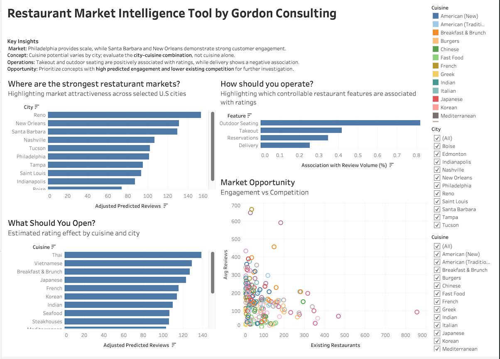

01 / DATA PROJECT

Restaurant Market Intelligence
An end-to-end analytics project using Yelp data to help restaurant investors evaluate markets, cuisine opportunities and operating characteristics through data preparation, feature engineering, predictive modelling and interactive visualization.
PYTHON • PANDAS • STATSMODELS • TABLEAU • DATA MODELLING
POWER BI • SQL • DATA VISUALIZATION
View Case Study →